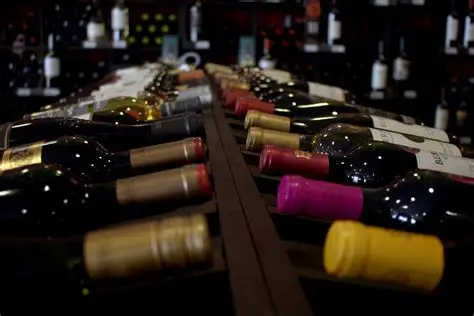

A Vinheria Agnello trabalha com vinhos nacionais e internacionais, oferecendo aos seus clientes uma seleção
especial de rótulos. Para preservar a qualidade de cada garrafa, a vinheria adota cuidados rigorosos no
armazenamento, evitando fatores como exposição prolongada à luz, temperaturas elevadas e vibrações constantes,
que podem alterar a coloração, os aromas e o sabor dos vinhos.

Os vinhos de maior valor e os rótulos raros recebem atenção especial durante o armazenamento. Esses cuidados
têm como objetivo manter as características originais de cada vinho, garantindo que as garrafas cheguem aos
clientes com a qualidade preservada desde sua origem. Dessa forma, a Vinheria Agnello demonstra seu compromisso
com a qualidade e com uma experiência diferenciada para seus clientes.
| Vinho | País | Temperatura de Armazenamento |
|---|---|---|
| Agnello Reserva Cabernet Sauvignon | Chile | 16°C - 18°C |
| Agnello Chardonnay Premium | Argentina | 8°C - 10°C |
| Agnello Rosé Syrah | França | 10°C - 12°C |
| Agnello Malbec Especial | Argentina | 16°C - 17°C |
| Agnello Merlot Tradição | Chile | 15°C - 17°C |
| Agnello Sauvignon Blanc | França | 7°C - 9°C |
| Agnello Pinot Noir Seleção | Chile | 14°C - 16°C |
| Agnello Espumante Brut Rosé | Itália | 6°C - 8°C |